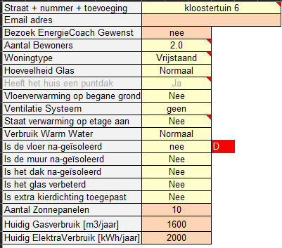

zondag 27 april 2025
22:32
Met dit rekenblad kun je op zeer eenvoudige wijze inzicht krijgen waar de (warmte-)energie in een specifieke woning verdwijnt. Het programma is opensource en wordt verspreid onder de FreeBSD licentie. Een aantal bekende gegevens van de woning haalt het rekenblad uit het BAG register.
Tested en werkt | - Excel-2019, Excel-Prof-2021, Excel-365 - Libre Office Calc 6.4.3.2 7.4.6 - Google (adrescheck conditional formatting werkt niet) |
Werkt niet onder |
|
Hieronder staan alle vragen die moeten worden beantwoord, om tot het standaard resultaat te komen. Deze vragen kunnen vaak door de bewoner zelf al worden beantwoord. Wij hebben daarom ook een webformulier gemaakt, dat door iedereen kan worden ingevuld, waarna het resultaat wordt teruggezonden.
De vragen met een roze achtergrond mogen worden overgeslagen.

Aan de hand van de antwoorden op bovenstaande vragen wordt het huidige gasverbruik berekend, worden de mogelijke verbeteringen aangegeven, en bij iedere verbetering wat die maatregel oplevert en hoeveel investering die vergt. Ook wordt iets gezegd over het comfort van de woning.
Daarnaast wordt een schatting gegeven van het Energielabel nu en na toepassing van alle verbeteringen. Verder wordt een raming gemaakt van het vermogen van een warmtepomp nu en na verbetering van de isolatie.
De ervaren gebruiker kan alle details van de bouwelementen van de woning aanpassen.
Verder kan iedere parameter gewijzigd worden.
De ervaring leert dat meer 90% van de woningen met een afwijking van minder dan 15% wordt berekend door enkel bovenstaande vragen in te vullen.
Verder zijn een aantal tabbladen aanwezig met tabellen en hulpberekeningen, zoals:
Inzicht WarmteLek Woningen.